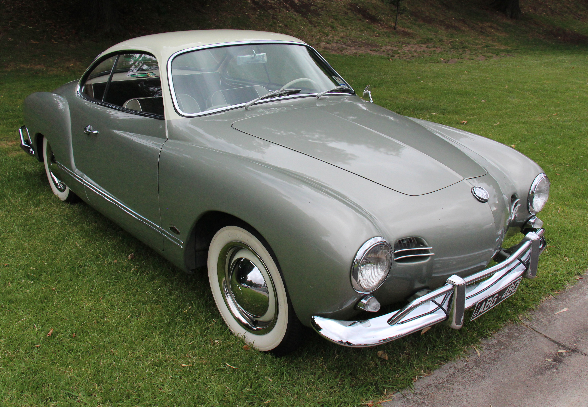

OLDSCHOOL
Ficha Técnica
Ano
1962 - 1972
Motor
1.5 | 4 cilindros
Potência
52 cv
Câmbio
Manual | 4 marchas
Tração
Traseira
Carroceria
Coupé
Combustível
Gasolina
FIPE
R$ 70.000 ~ R$ 180.000
Um clássico que virou obra de arte
Com seu desenho elegante e carroceria criada pela Karmann, o Karmann Ghia conquistou seu espaço entre os grandes clássicos. Produzido no Brasil pela Volkswagen, combinava a mecânica simples do Fusca com um visual esportivo e sofisticado. Hoje, é um dos carros nacionais mais admirados pelos colecionadores.